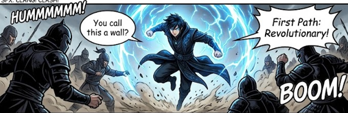
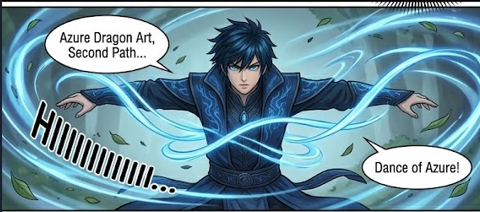
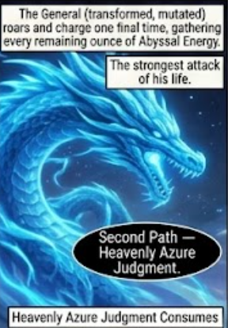
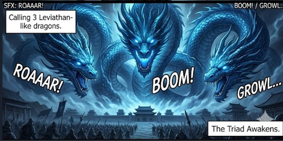
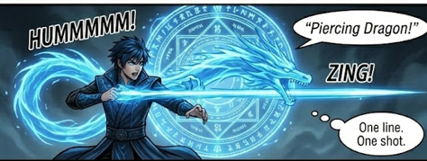
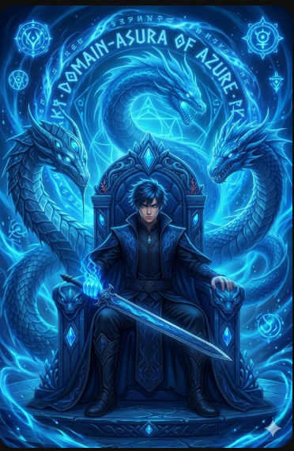
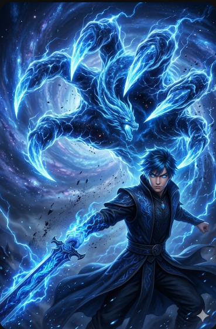
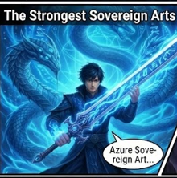

No.of skills Xiao Lin collected
There are a total of 3 paths in this technique
First Path "Revolutionary":-





This technique is acquired By Xiao Lin when he ventures to flame valley. This technique forms an array that shoots out a dragon which auto locks its enemy and pierces through them.

In his domain he summons a azure throne which commands the 3 Azure dragon in his thone in his domain evry cultivator is a prey and he is the predator he is invincible and omnipotent in his domain

This is one of the 3 heavenly skills of "Azure cloud clan" It creates void energy to make Xiao Lin fist a black hole that earases everthing it touches with the power of this skill Xiao Lin advanced to Soveriegn Master

This one of the 3 heavenly skills of "Azure Cloud clan" It is created by the dragon king Long Tian the late Azure Sovereign he passed it to Xiao Lin who is currently the azure sovereign